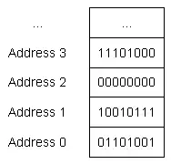

Bits、bytes 和内存地址#
在1.3 - 对象和变量中我们介绍过，事实上变量只是一段可以存放信息的内存的名称。简单回忆一下，程序可以使用计算机提供的随机访问内存(RAM)。当变量被定义的时候，一块内存被关联到了该变量。
内存的最小单元是一个二进制位（也称为 位），它可以存储 0 或 1.你可以把一个比特看成是一个灯泡的开关——它只有开（1）和关（0）两种状态，没有其他任何中间状态。如果你去观察一段内存内容的话，你总能看到 …011010100101010… 或其他类似组合。
我们将内存分割成一系列连续的单元，称为内存地址。类似于街道地址可以用来查找街道上某幢建筑，通过内存地址我们也可以找到特定地址中存放的内容。
不够有件事可能出乎你的意料，对于现代计算机体系结构来说，计算机内存中的bit并不都具有一个唯一的地址。这是因为内存地址的数量是有限的，而且也并不需要为每个bit都指定一个唯一的地址。实际上，每个内存地址表示一个字节的地址。一个字节表示一组被作为一个单元操作的比特。一般来讲（现代计算机）一个字节包含8个连续的 bit。
下图显示了一些内存地址及其内部存放的数据（byte为单位）：

数据类型
由于计算机上所有的数据都只是一些连续的比特，我们必须要使用数据类型（通常简称为类型）告诉计算机如何将内存中的数据解析为有意义的值。我们已经学习了一种数据类型：整型。当一个整型变量被定义时，我们告诉计算机”该变量使用的这一段内存需要被解析为一个整型值“。
当为一个对象进行赋值时，编译器和CPU会将这个值编码成一系列连续的 bit然后存放到内存中（注意：内存只能存放比特）。例如，如果你将一个整型的对象赋值为65，则该值会被转换为 0100 0001 后存放在内存关联的地址中。
反过来，当对象被求值时，这些连续的 bit 会被重新组织成原来的值，即 0100 0001 会被转换为 65。
幸运的是，编译器和CPU会帮助我们完成上述工作，我们通常不需要担心这些值是如何被转换的。
我们的工作仅仅是为变量指定一个我们需要的值。
基本数据类型#
C++ 具有很多内置的数据类型，称为基础数据类型，也经常被称为基本类型、原始类型或内置类型。
下表是一些基本数据类型，有些可能你已经见过了：
| 类型 | 分类 | 含义 | 例子 |
|---|---|---|---|
| float | Floating Point | a number with a fractional part | 3.14159 |
| double | Floating Point | a number with a fractional part | 3.14159 |
| long double | Floating Point | a number with a fractional part | 3.14159 |
| bool | Integral (Boolean) | true or false | true |
| char | Integral (Character) | a single character of text | ‘c’ |
| wchar_t | Integral (Character) | a single character of text | ‘c’ |
| char8_t (C++20) | Integral (Character) | a single character of text | ‘c’ |
| char16_t (C++11) | Integral (Character) | a single character of text | ‘c’ |
| char32_t (C++11) | Integral (Character) | a single character of text | ‘c’ |
| short | Integral (Integer) | positive and negative whole numbers, including 0 | 64 |
| int | Integral (Integer) | positive and negative whole numbers, including 0 | 64 |
| long | Integral (Integer) | positive and negative whole numbers, including 0 | 64 |
| long long (C++11) | Integral (Integer) | positive and negative whole numbers, including 0 | 64 |
| std::nullptr_t (C++11) | Null Pointer | a null pointer | nullptr |
| void | Void | no type | n/a |
本章将相继介绍这些基本数据类型（除了 std::nullptr_t，我们会在讨论指针时讨论它）。C++ 也支持很多复杂类型，称为复合类型，我们会在后续的章节中进行介绍。
The _t suffix#
很多在新版本 C++ 中定义的数据类型（例如 std::nullptr_t）都包含一个_t后缀。这个后缀表示 type（类型），这是一种常见的用于现代类型的命名方式。
如果你遇到了带有_t后缀的标识符，它很可能是一个类型，但是也有很多类型是不包含该后缀的，所以该命名规则并不是被一贯遵守的。